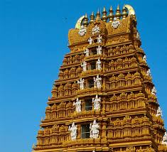
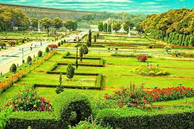
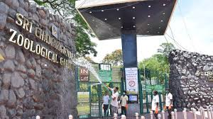
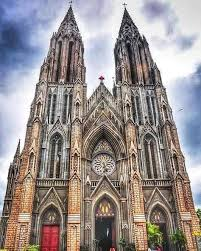
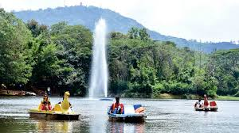

Mysore
Explore the cultural capital of Karnataka, Mysore, known for its royal heritage, magnificent palaces, and vibrant festivals.
Places to Visit in Mysore:
Mysore Palace

Chamundi Hill

Brindavan Gardens

Mysore Zoo

St. Philomena's Church

Karanji Lake